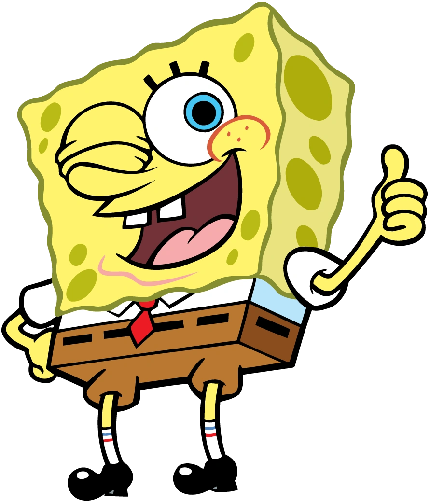
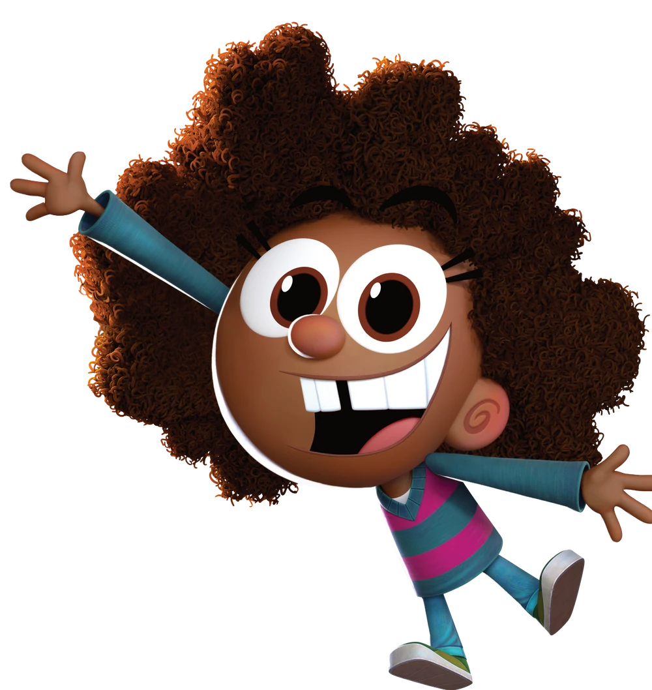
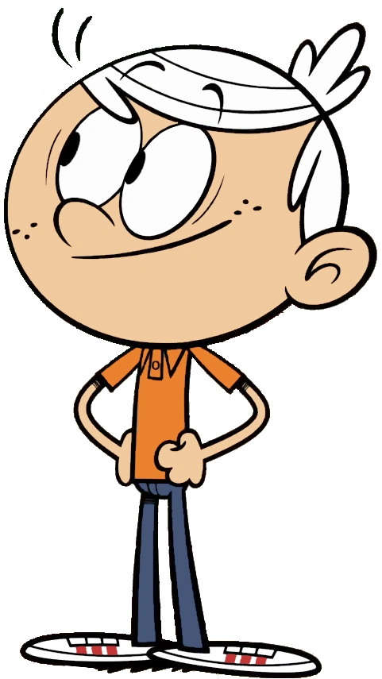
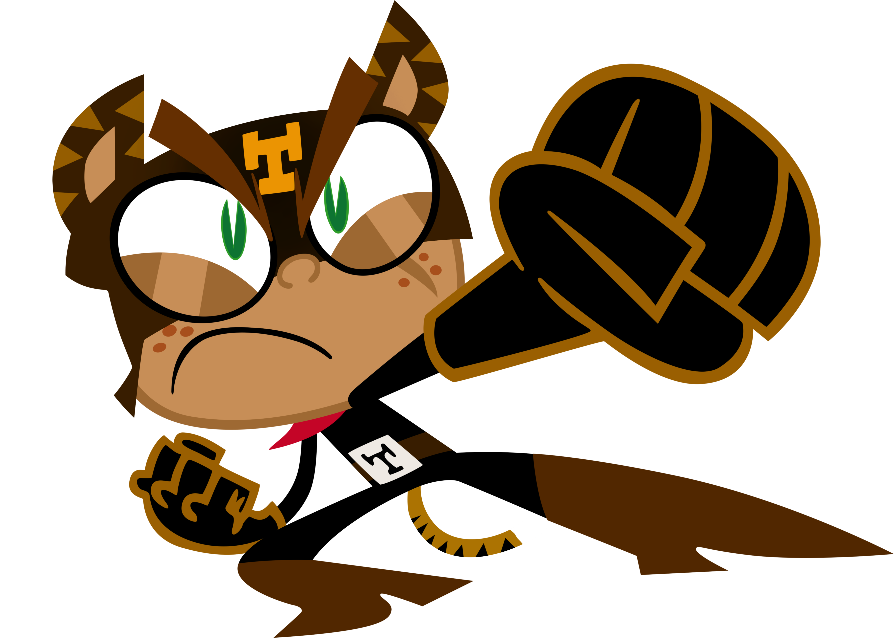
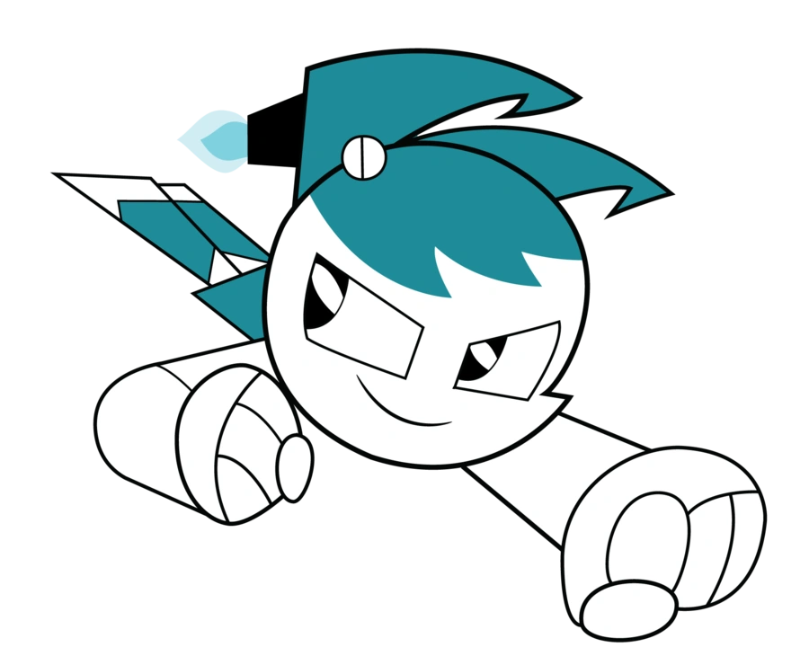
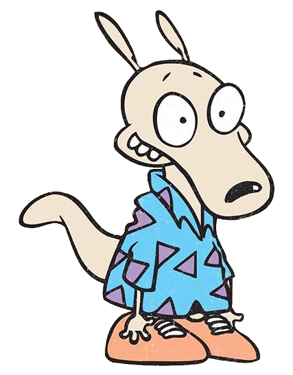
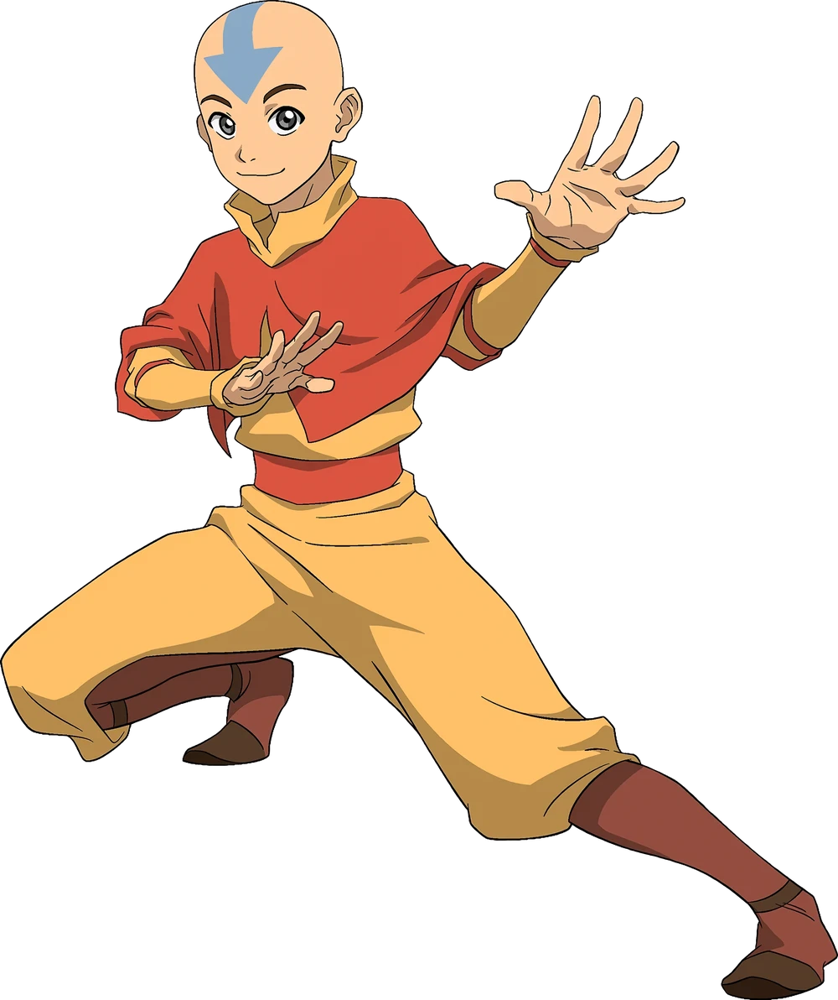
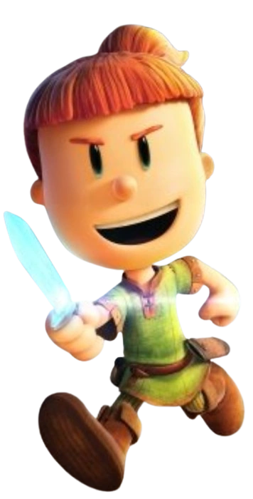

Nickelodeon Power Play Character Info Sheet
|
Character |
Description |
Age |
Nick Show |
Favorite Video Game(s) |
Chosen Team |
SPONGEBOB SQUAREPANTS |
SpongeBob is an excitable and charming young sponge.
He and Patrick often annoy Squidward without really knowing it.
He also works at the Krusty Krab with his boss Mr. Krabs |
N/A |
SpongeBob SquarePants |
N/A |
Slime Timers |
HAZEL WELLS |
Hazel is a 10-year-old African American girl who is curious, imaginative, and full of life.
She's spunky, fun-loving, and passionate about her interests.
She's also friendly, caring, kind, adventurous, and loves to explore and ask questions. |
10 |
The Fairly OddParents: A New Wish |
N/A |
Epic Elites |
LINCOLN LOUD |
As the middle child and the only boy in the family, Lincoln is often used as a lab rat, or a fashion show participant.
On the plus side, he gets his own room, even though it was origionally a linen closet.
To survive in this house, Lincoln is always 'the man with the plan'.
With 10 awesome sisters supporting him, there's nothing he can't do! |
12 |
The Loud House / The Casagrandes |
Total Trash Takedown, Kitten Emergency, and Ultimate Hero Clash 2 |
Wild Styles |
EL TIGRE / MANNY RIVERA |
For the most part, Manny Rivera is a well-meaning kid with the energy and the spirit of a hero, but he's no goody-two-shoes.
He's also got some serious supervillain potential.
When he spins his mystical belt buckle, Manny transforms into the brave and powerful El Tigre, who struggles with whether to use his superpowers for good or evil and sometimes evil wins.
At times Manny will do the wrong things for the right reasons, at other times he'll do the wrong thing for the wrong reasons, and sometimes he'll even do the right thing for the right reasons, but mostly he's just looking for new and exciting adventures for himself and his best friend, Frida Suarez. |
13 |
El Tigre: The Adventures of Manny Rivera |
Super Macho Fighter 2 |
Wild Styles |
JENNY WAKEMAN |
Jenny is the state-of-the-art robotic protector of Tremorton, armed with advanced weaponry and devices at her disposal, but wishes to live the life of a normal teenager.
Throughout her life, she tries to balance her life with duties of a crime-fighter while attending high school and proceeding with teenage endeavors. |
16 |
My Life As A Teenage Robot |
N/A |
Dynamic Dynamos |
ROCKO |
Rocko is a sensible, moral, and somewhat timid wallaby who enjoys the simple pleasures in life in O-Town.
He's neat, compassionate, and self-conscious. |
20 |
Rocko's Modern Life |
N/A |
Mega Movers |
AANG |
Aang is the last surviving Airbender, a monk of the Air Nomads' Southern Air Temple.
He is also the current incarnation of the Avatar, the spirit of the planet manifested in human form.
As Avatar, Aang can control all four elements and is tasked with keeping the Four Nations at peace. |
10 |
Avatar: The Last Airbender |
N/A |
Hidden Temples |
MAX |
Max is a young, determined girl who dreams of becoming a knight, despite being told that girls can't be knights.
She's also the leader a group of misfit adventurers, called the "Midknights", on quests to fight evil, right wrongs, save Byjovia from the evil King Gastley. |
10 |
Max & The Midknights |
N/A |
Goofy Gladiators |